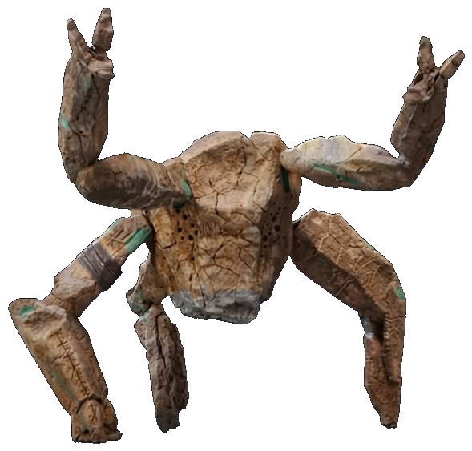

Long ago, on the far rim of a forgotten galaxy . . .
It is an age of silence. The great survey fleets are gone, and the charts they left behind have crumbled into rumor and dust.
Out past the last beacon, a lone scout ship, the HAIL MARY, drifts toward a small, restless SOLAR SYSTEM at the edge of the charts, a handful of impossible worlds circling a sun in its final days.
Its pilot carries one final task: to chart every planet, name every shadow, and finish the map that was never meant to be completed.
But the amber sun is dimming faster than any star should. Something small and patient is drinking its fire, and the map will not be complete until it is found.
The engines wake. The long approach begins . . .
